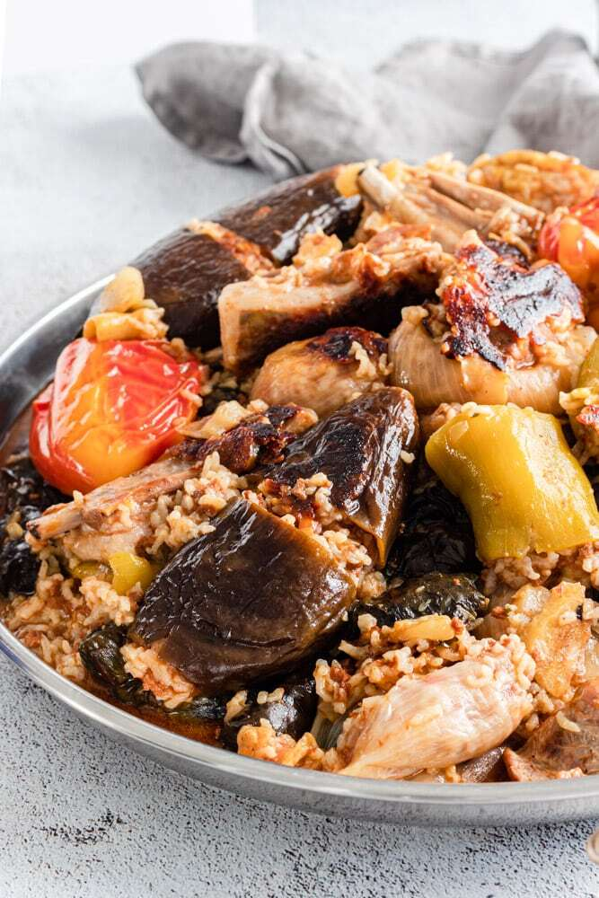
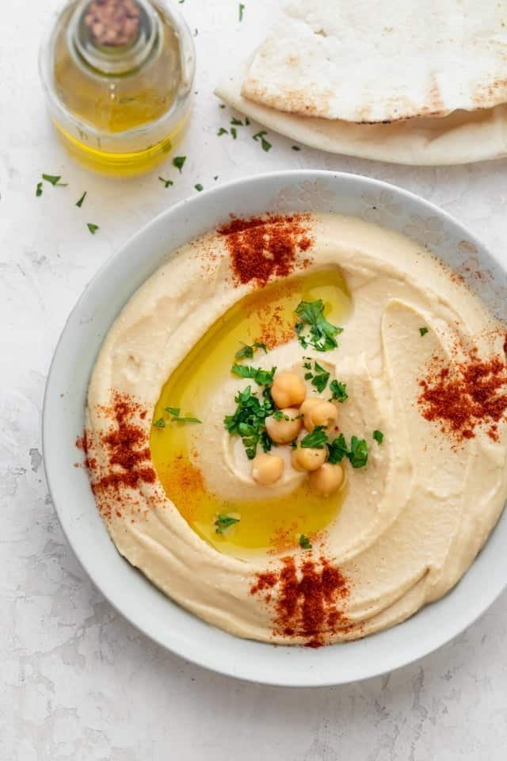
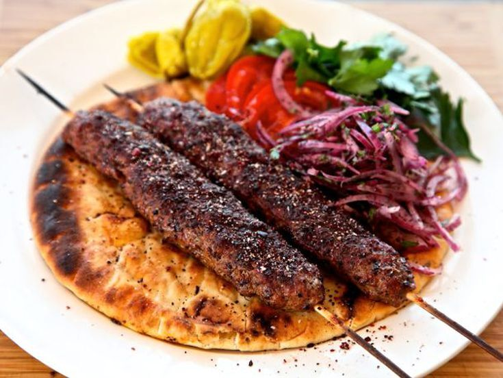
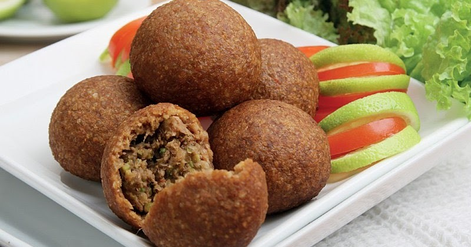
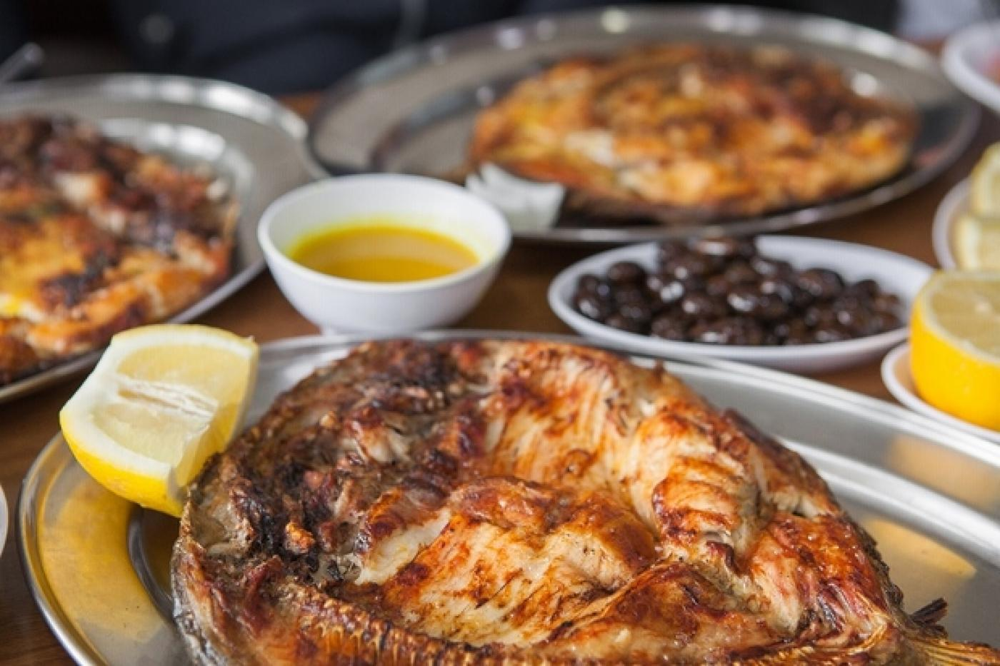
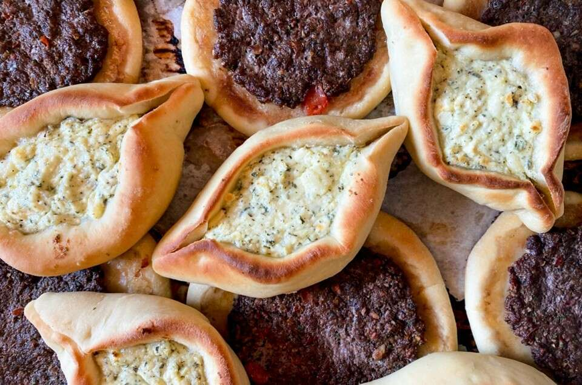
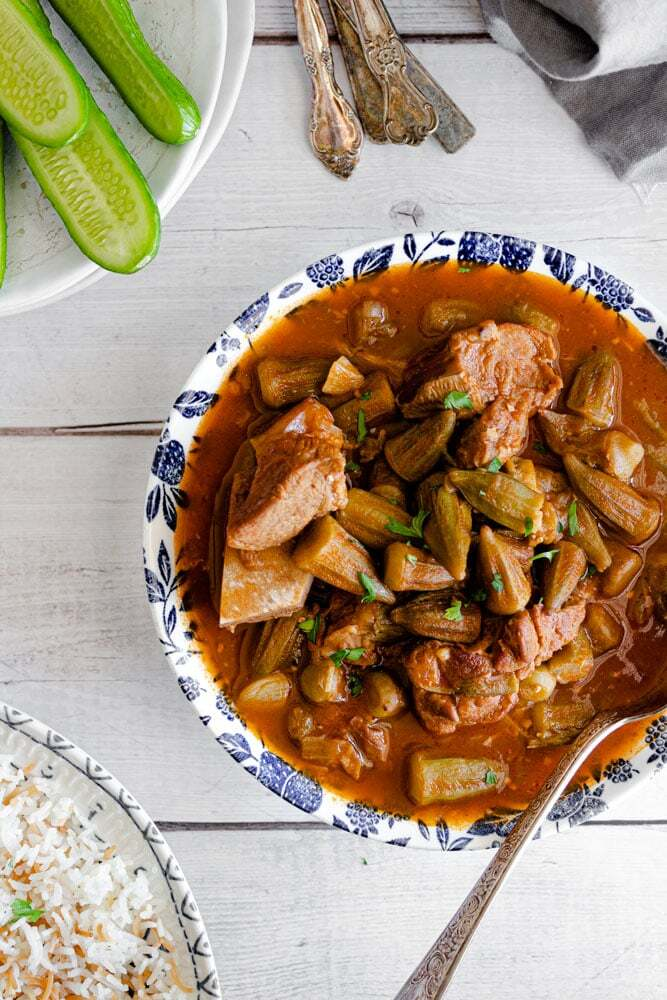
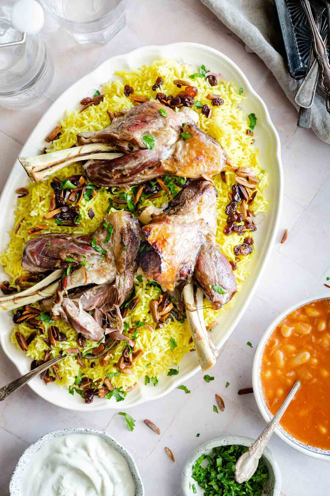
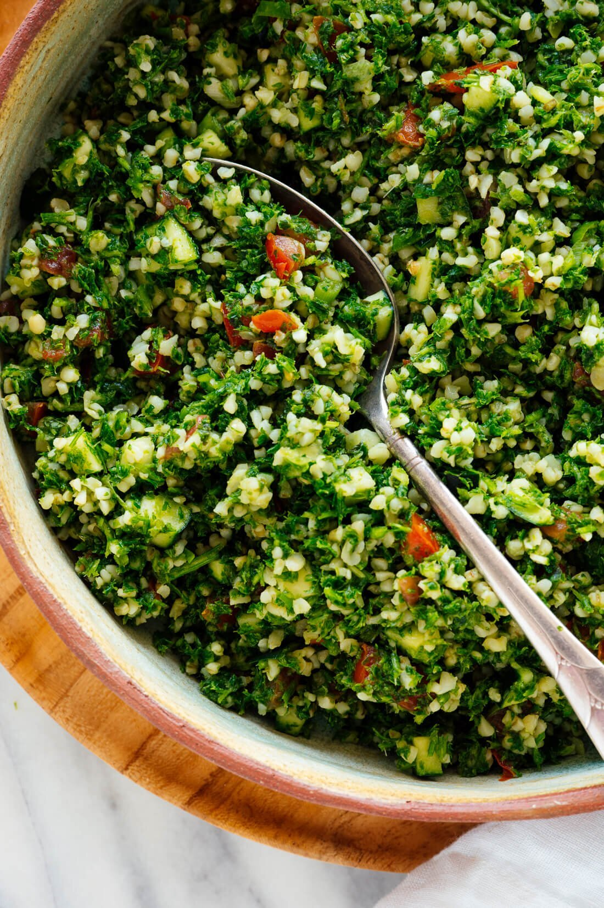

The Mediterranean cuisine comprises of many mouth watering Middle Eastern appetizers and meals. Here some of my favorites!
Dolma, any of various stuffed
vegetable dishes—notably, the young leaves of the grapevine stuffed with a lemon-flavoured mixture of rice, onion, and, frequently, ground lamb. This image showcases the Iraqi dolma. Hummus is a Middle Eastern dip, spread, or savory dish made from cooked, mashed chickpeas blended with tahini, lemon juice, and garlic.Hummus is a Middle Eastern dip, spread, or savory dish made from cooked, mashed chickpeas blended with tahini, lemon juice, and garlic.These Iraqi Kabobs are made with ground beef, fresh parsley, tomatoes, and onions. The kabob is then sprinkled with sumac when it comes off the grill to add a sour flavor!Masgouf, is a Mesopotamian dish consisting of seasoned, grilled carp; it is often considered the national dish of Iraq.Sfiha or sfeeha is a dish consisting of flatbread cooked with a minced meat topping, often lamb flavored with onion, tomato, pine nuts, and spices. Sfiha can consist of other toppings like cheese or zaatar.Bamia is a Middle Eastern stew prepared using lamb, okra and tomatoes as primary ingredients. Additional ingredients used include tomato sauce, onion, garlic, cilantro, vegetable oil, cardamom, salt and pepper. The stew is typically eaten with rice or bread.Quzi, also spelled as qoozi or ghoozi, is a rice-based dish popular and is considered as one of Iraq's national dishes. It is served with very slowly cooked lamb, roasted nuts, and raisins served over rice.Tabbouleh is a Levantine salad made mostly of finely chopped parsley, with tomatoes, mint, onion, bulgur, and seasoned with olive oil, lemon juice, salt and sweet pepper.